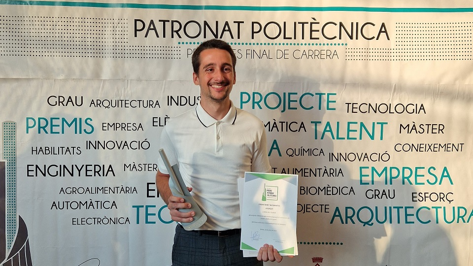
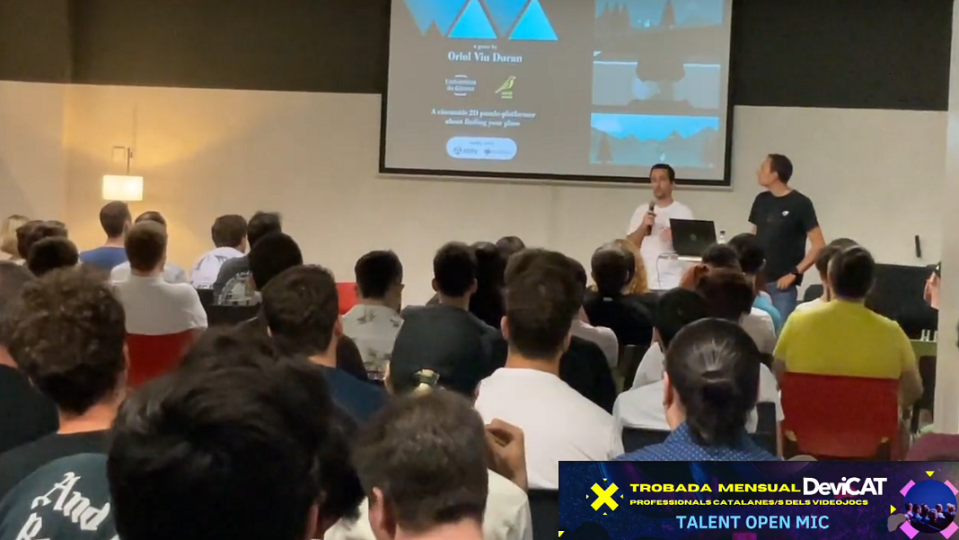

| Release | Team Size | Engine | Platforms | Links |
|---|---|---|---|---|
| 16/05/23 | 1 | Unity | itch.io |

About
Video
Screenshots


GIFs

Details & Analysis
- Story & Narrative Design
The main purpose of WAVA is to transmit a message of growth and self-discovery using mainly the dicothomy between the two protagonists - the playable character being the carrier of the former, and the yellow Light of the latter - and environmental storytelling. For instance, gloomier weather, larger caves, and broken bridges are used to represent the main character's feelings of unstability and loneliness. The main game loop itself also exemplifies the themes of self-growth and finding your place, since it is based on defeating and overcoming Setbacks, acquiring Knowledge from them, and then using it to advance through the world. Nonetheless, the story was purposefully designed to be open to interpretation to the player, as other subtler themes - such as grief, coming-of-age, or letting go of people - are also included in the narrative.
Gameplay & Level Design
Although the game is intended to be easy to play, it still feels engaging by combining puzzles, "combat" and different types of character movement, such as walking, running, crouching, or swimming. On the other hand, the absence of jumping is intended to make the game feel more grounded. The game dynamics are constantly changing in order to keep the game refreshing and mirror the main character's growth. For instance, if the main character can't protect itself, levels do not rely on "combat" mehcanics and are more focused on logic and puzzles. Level composition also plays its part, as it feels either claustrophobic or liberating depending on the current mental state of the character. Finally, a collectible system evokes a sense of exploration and gives the game more replayability.
UI & UX Design
In order to stay in line with the game's cinematic nature, the interface is intended to be as diegetic and non-intrusive as possible, giving feedback and information only on specific moments and places. The HUD is updated whenever the player switches their controller, making it possible to alternate easily between keyboard and gamepad, supporting both PlayStation and XBOX controllers. Controls are simple, intuitive, and follow a similar pattern to other platformers. As of now, control configuration is unfortunately not possible.
Art & Animation
The artistic and visual aspect of the game is very minimalist, atmospheric, and combines abstractness with realism. Despite its simplicity, thanks to its distinct simple vector art-style, flat colours, and approximately 35 different spritesheet animations, the game has a very unique appearance.
Sound & Music
The auditory aspect is the only one that was not made entirely by myself. The original soundtrack was composed by a friend of mine who is a professional musician. We worked together to craft a sound that complements the game's feel and story. I also focused on elevating the ambience and immersion through the sound design; for example, with reverb inside caves or a lowpass filter when going underwater.
Facts & Accolades-
My Final Degree Project, which consisted in designing and developing the prototype for WAVA, was awarded full marks and the "Computer Field Award" at the 28th Edition of the Premis Patronat.
-
I was selected to represent the Universitat de Girona by presenting WAVA at the Talent Open Mic organised by the DeviCAT, the Association of Video Game Professionals in Catalonia.
-
Duration: Ten months (Prototype) + Nine months (Final)
-
Developer: North Oriole Games
-
Publisher: Self-published


Inspiration-
Gameplay: Limbo - Inside (Playdead, 2010 - 2016), Gris (Nomada Studio, 2018), Another World (Éric Chahi, 1991)
-
Visual: Familia (Sebastian Curi, 2016)
-
Music: Gymnopédie No. 1 (Erik Satie, 1888)